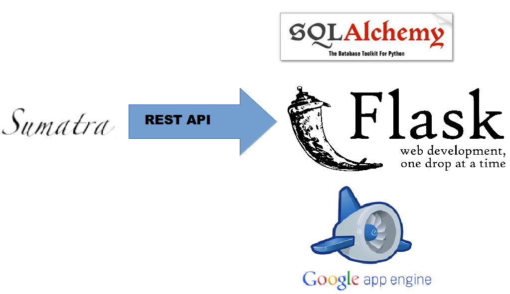

Simulation Management Tools
Automate
About me
scientific/academic code developer
develop scientific Python tools
run/manage simulations
interested in reproducible research, see @wd15dan
Interested in...
logging simulations
replicating simulations
building upon existing simulations
meta-data standards for simulations
curating simulations
integration tests for simulations
Automate with open source tools!
Scientific Development Process

Core Issues
workflow control
version control
event control
Version Control

maintains history of code changes
but not code usage
integrated into scientific code development
Event Control
provide a unique ID (SHA checksum) for every workflow execution
capture metadata, not data
not workflow control or version control
partial solution: Sumatra, a simulation management tool
Client-Side Solution: Sumatra
doesn't change my workflow
records the metadata (not the data): parameters, environment, data location, time stamps, commit message, duration, data hash
generates unique ID for each simulation
Demonstration
$ smt init smt-demo
$ smt configure --executable=python --main=script.py
$ # python script.py params.json
$ smt run --tag=demo --reason="create demo record" params.json wait=3
Record label for this run: '0c50797f1e3f'
No data produced.
Created Django record store using SQLiteLocal Web Interface
Server-Side Solution

Thanks!
slides: wd15.github.io/nims-visit-2014
sumatra demo: github.com/wd15/smt-demo